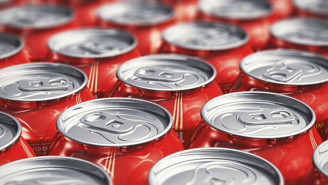

Coca-Cola JOURNEY. Refreshing the world, one story at a time.
The Cola-Cola Company

Coca-Cola News
- The Coca-Cola Foundation and The Coca-Cola Company Give Back $106 Million in 2016
- COKE'S KATHY WALLER AND HELEN SMITH PRICE AMONG BLACK ENTERPRISE’S 'MOST POWERFUL WOMEN IN BUSINESS'
- Taylor Dillard reflects on five decades with coca cola
Coca Cola News
Effects of Coca-Cola
Harmful Effects of Drinking Coca Cola (Coke)
- Coca-Cola 'comparable to heroin' in how it stimulates the brain's reward and pleasure centers
- Kidney Failures
- Metabolism Level Decreases:
Others..
Harmful Effects of Drinking Coca Cola (Coke)
Back to top: UP UP UP